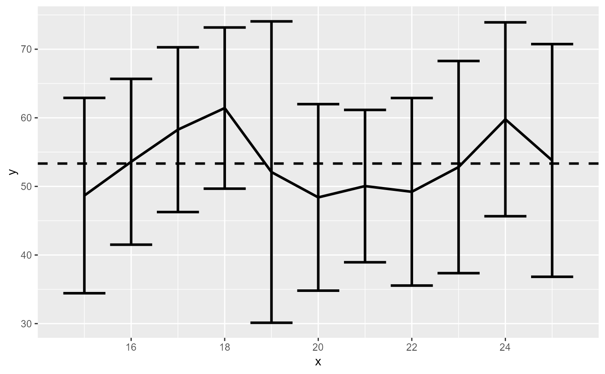
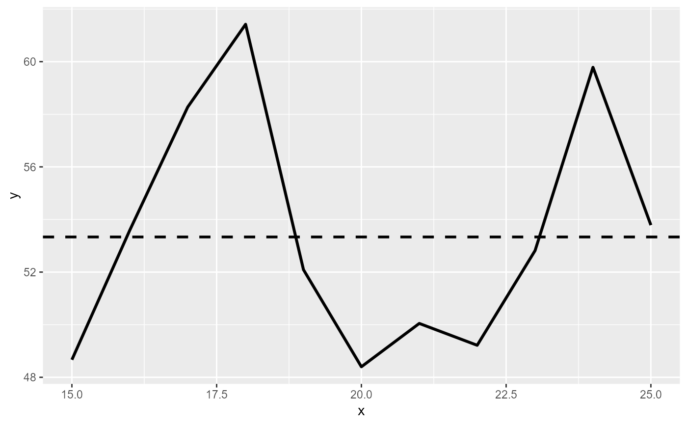
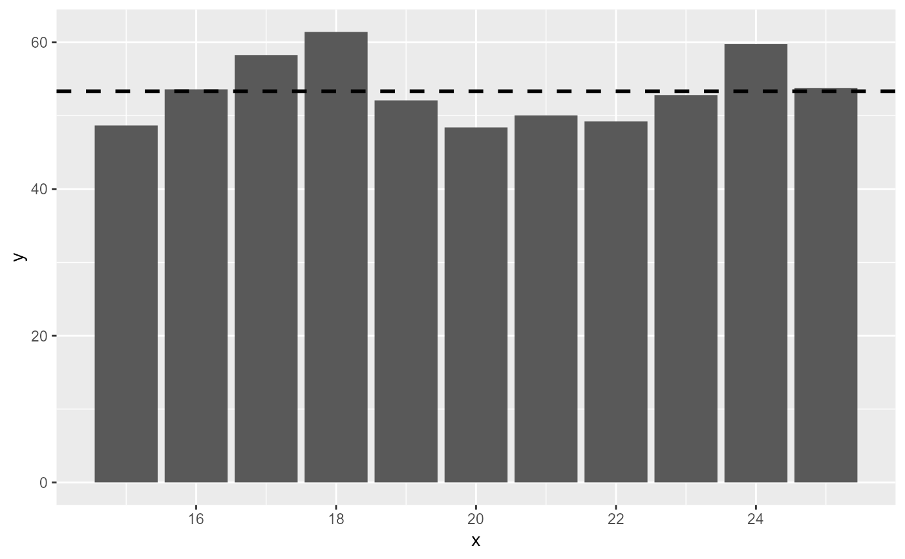

Create a line graph with 95% confidence interval bars
make_average_graph(
data,
x_col,
y_col,
confidence_interval_error_bars = TRUE,
mean_line = TRUE,
type = c("line", "bar")
)A data.frame with the data you want to graph
A string with the name of the x-axis column
A string with the name of the y-axis column
A boolean (default TRUE) for whether to include 95% confidence intervals or not.
If TRUE (default) willadd a dashed line with the overall mean.
A string for whether it should make a linegraph ("line", default) or a bargraph ("bar")
A ggplot object. Also prints the graph to the Plots panel.
data = data.frame(x = sample(15:25, size = 200, replace = TRUE),
y = sample(1:100, size = 200, replace = TRUE))
make_average_graph(data, "x", "y")

make_average_graph(data, "x", "y", confidence_interval_error_bars = FALSE)

make_average_graph(data, "x", "y", type = "bar", mean_line = FALSE)
make_average_graph(data, "x", "y", confidence_interval_error_bars = FALSE, type = "bar")
